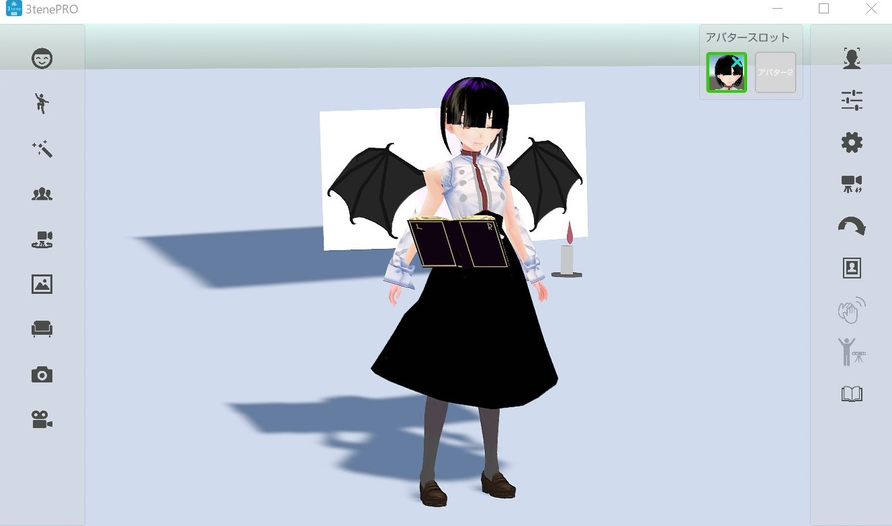

VRM_IMPORTER_for_BlenderでVRMモデルを作る際の注意点
- Posted on October 24, 2020
- Updated on November 15, 2020
全てのメッシュの原点(Origin)を ワールド座標系の 原点に置く
There are not an object on the origin
(もしくは) が原点座標にありません
というエラーについて。単刀直入にいうと、 全てのメッシュは Originをワールド座標系の原点におく必要があります
これは、 Set origin> Origin to Geometryとは違う ので注意してください。
これをするには、
- 3Dカーソルを原点に移動
- オブジェクトを選択
Set origin> Origin to 3D cursor
の手順を踏みます。
追加したmeshオブジェクトのtransformは全て0(scaleは1)にする
Blender上では全然問題なく見えますが、これをしておかないとexportした後に変な位置にオブジェクトが表示されてしまいます。 (私は3tenePROで動作確認をしていますが、おそらく他でもそうなると思います。)
具体的には、「全てのトランスフォームが0(scaleは1)に指定された通りに表示」されます。
具体例:
scaleが1になっていない例 
scaleが1になるように調整した例 
rotationが0になっていない例 
rotationが0になっている例 
直し方
Inspectorで各transformの値を確認します。そうしたら、それを覚えておき値は0に修正。 Edit modeに移行して、 originを中心に、軸を指定して先ほど覚えた値分 回転させます。
最終系
綺麗になりました！！

Shade Textureは必ず設定する
ShadeTextureを設定していないと、面を法線と反対側から見たときにピンク色になってしまいます。 これは、Shade Colorが塗られているからで、それを防ぎ表面と同じものを表示したい場合は必ず設定する必要があります。 なお、MainTextureと同じテクスチャで問題ないと思います。
設定してなかった:
色々と調節は必要そうだね pic.twitter.com/ndXTzYKdfQ
— mi'e himari (@mihe_himari) October 26, 2020
設定した:
他のオブジェクトにも設定してきた...ﾖｼ!! pic.twitter.com/8tMJyUaawt
— mi'e himari (@mihe_himari) October 26, 2020
todo
- 画像入れる
- 動画いれる